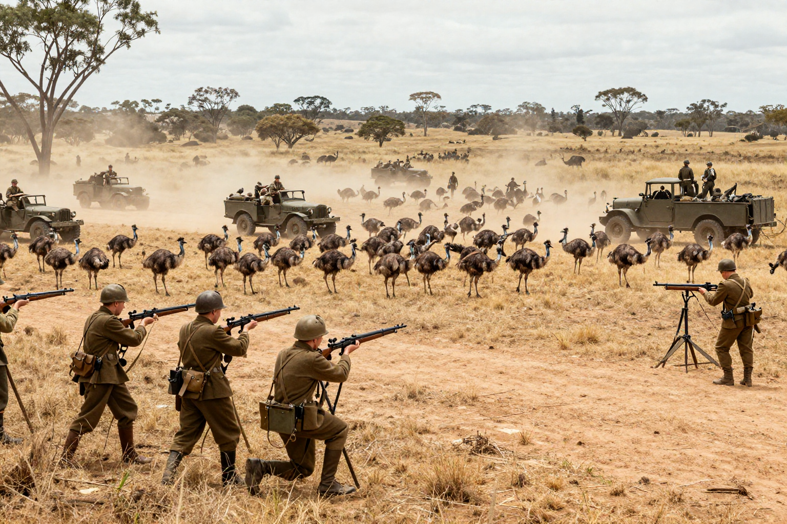
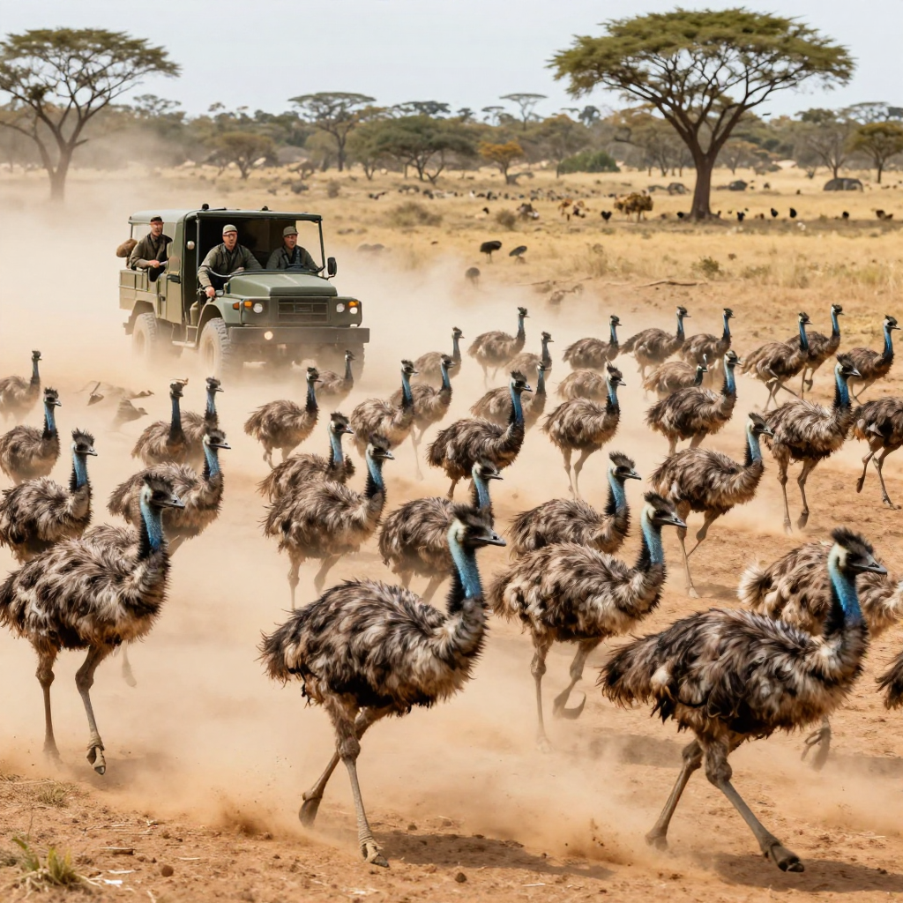
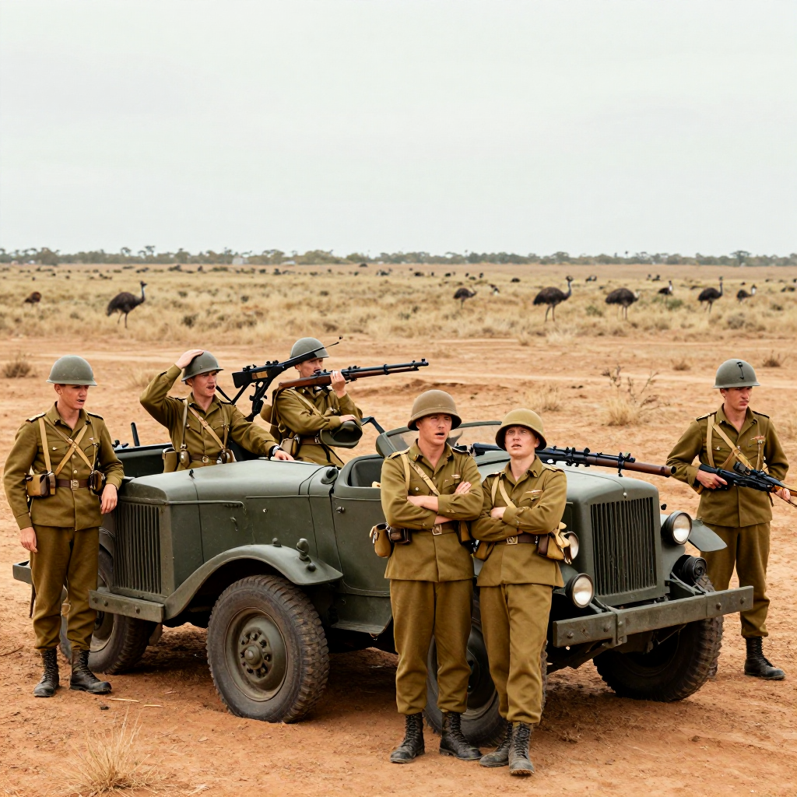

The Great Emu War: When Birds Defeated the Army!

The Australian military vs. 20,000 emus. Spoiler alert: the emus won.
What happens when you send soldiers with machine guns to fight birds? You'd expect the soldiers to win, right? Well, in 1932, Australia found out the hard way that birds don't play by the rules.
This is the true story of the Great Emu War - when the Australian military declared war on 20,000 emu birds... and lost.
Why Go to War With Birds?
After World War I, the Australian government gave land to soldiers who had fought in the war. These veterans became farmers in Western Australia. But they had a problem: emus.
Emus are large, flightless birds - the second largest birds in the world after ostriches. They're fast, tough, and hungry. In 1932, about 20,000 emus invaded the farmland, destroying crops and fences everywhere they went.
The farmers complained to the government. The government's solution? Send in the military with machine guns!

Emus can run at 50 km/h (31 mph) and are nearly impossible to hit!
🐦 Meet the Emu
Emus can grow up to 1.9 meters (6.2 feet) tall and weigh up to 60 kg (132 lbs). They can run at 50 km/h and are excellent swimmers. They also have thick feathers that can deflect bullets!
The Battle Begins
In November 1932, Major G.P.W. Meredith led three soldiers armed with Lewis machine guns and 10,000 rounds of ammunition. Their mission: destroy the emu army.
On the first day, the soldiers spotted a large group of emus and opened fire. The results were... disappointing. The birds scattered in every direction, running at incredible speeds. Most of them escaped.
The soldiers tried again and again. They set up ambushes. They chased emus in trucks. They even tried shooting from moving vehicles. But the emus were too fast, too smart, and too tough.
Emu Tactics
The emus turned out to be surprisingly good at military strategy:
- 🏃 They would split into smaller groups when fired upon
- 👀 They had "lookouts" who would warn the flock
- 🛡️ Their thick feathers deflected many bullets
- 💨 They could outrun the soldiers' trucks!
Major Meredith later reported: "These birds are like tanks. They can face machine guns with the invulnerability of tanks."

After weeks of fighting, the soldiers had fired thousands of rounds but barely made a dent in the emu population.
📊 The Final Score
After days of fighting, the military had used about 2,500 rounds of ammunition and killed only about 200-500 emus. That's less than 3% of the emu army. The birds won!
Victory for the Birds
After weeks of embarrassing failure, the Australian government gave up. They withdrew the military and declared the operation a success (it wasn't). The farmers were still stuck with thousands of emus destroying their crops.
The government tried again later with a different approach: they offered a bounty for dead emus. This worked much better than machine guns, and local hunters eventually reduced the emu population.
The Legacy
Today, the Great Emu War is remembered as one of history's most ridiculous military campaigns. It proved that sometimes, nature wins no matter how many guns you have.
The emu is now a protected species in Australia - and appears on the Australian coat of arms alongside the kangaroo. Both animals were chosen because they "can only move forward, never backward." After the Emu War, the Australians probably wished they could move backward and forget the whole thing!
The Great Emu War remains proof that even the most powerful military can be defeated by determined birds!
Clear Summary for Readers of All Ages
The Great Emu War: When Birds Defeated the Army! can sound dramatic, but the best way to understand it is to separate strong evidence from speculation. This article is written to be clear enough for younger readers while still useful for adults who want reliable context.
In simple terms, this topic matters because it connects three ideas: what happened, how we know, and what remains uncertain. The core story in The Great Emu War: When Birds Defeated the Army! is easier to follow when we use a timeline, define key terms, and point directly to sources.
What happens when you send soldiers with machine guns to fight birds? You'd expect the soldiers to win, right? Well, in 1932, Australia found out the hard way that birds don't play by the rules .
Background Timeline (What Happened, Step by Step)
- Well, in 1932, Australia found out the hard way that birds don't play by the rules .
- In 1932, about 20,000 emus invaded the farmland, destroying crops and fences everywhere they went.
- Experts continue revisiting The Great Emu War: When Birds Defeated the Army! as better tools and stronger source checks become available.
- Experts continue revisiting The Great Emu War: When Birds Defeated the Army! as better tools and stronger source checks become available.
- Experts continue revisiting The Great Emu War: When Birds Defeated the Army! as better tools and stronger source checks become available.
This timeline view helps younger readers build a mental map, and it helps adult readers evaluate whether later claims fit the documented sequence of events.
What We Know with Strong Support
Across discussions of The Great Emu War: When Birds Defeated the Army!, several points are consistently supported by records or repeatable analysis:
- What happens when you send soldiers with machine guns to fight birds?
- Well, in 1932, Australia found out the hard way that birds don't play by the rules .
- This is the true story of the Great Emu War - when the Australian military declared war on 20,000 emu birds...
- After World War I, the Australian government gave land to soldiers who had fought in the war.
These claims are stronger because they can be checked independently, rather than depending on one dramatic story or one unverified source.
How Researchers Study This Topic
Good history is a method, not just a story. When experts examine The Great Emu War: When Birds Defeated the Army!, they usually combine source criticism, technical analysis, and contextual comparison.
- Historians compare primary records, later retellings, and modern scholarship to reduce errors from repetition.
- A strong interpretation separates what documents clearly show from what is inferred later by commentators.
- Context is essential: social, political, and economic conditions often explain why events looked mysterious at the time.
For readers aged 7+, a simple rule is helpful: if someone makes a big claim, ask, “What is the evidence, and can another expert check it?”
What Experts Still Debate
Even with good evidence, not every question has a final answer. In The Great Emu War: When Birds Defeated the Army!, debates often continue because the surviving data is incomplete, damaged, or interpreted in different ways.
One common source of confusion is mixing the topics of Why Go to War With Birds?, The Battle Begins, and Emu Tactics as if they prove the same thing. In reality, each part of the story may require different standards of proof.
A balanced approach is to keep uncertainty visible: we can confidently state what records show today, while leaving room for future evidence to update the picture.
Myths vs. Evidence
Myth: If a topic is mysterious, experts have no idea what happened.
Evidence-based view: Usually, experts know many parts of the story; the debate is about specific details.
Myth: The most dramatic explanation is probably true.
Evidence-based view: The best explanation is the one that matches the most verifiable facts with the fewest assumptions.
Myth: New claims automatically replace old research.
Evidence-based view: New claims become accepted only after careful checks, replication, and critical review.
Why This Story Still Matters Today
The Great Emu War: When Birds Defeated the Army! is not only a curiosity from the past. It is also a practical lesson in how people evaluate information. In a world full of fast headlines, this topic reminds us to slow down, check sources, and separate confidence from certainty.
For younger readers, this builds critical-thinking skills. For adult readers, it improves media literacy and historical judgment. In both cases, the goal is the same: understand the past clearly enough to make better decisions in the present.
Mini Glossary (Plain Language)
- Primary source: A record made close to the event, like a report, letter, inscription, or official document.
- Secondary source: A later explanation that interprets primary evidence.
- Hypothesis: A proposed explanation that must be tested against evidence.
- Consensus: The view most experts currently support, knowing it can change with new data.
- Archival record: Stored historical documents such as court files, newspapers, and official correspondence.
- Historical bias: A systematic slant in records due to who wrote them and why.
Quick Recap
If you remember only three things about The Great Emu War: When Birds Defeated the Army!, keep these: (1) there is real evidence worth studying, (2) some questions remain open, and (3) careful source-checking is the best path to reliable understanding.
That combination of curiosity and caution is what turns a mystery into a meaningful history lesson for readers of every age.
References & Further Reading
Editorial note: We cross-check claims across multiple independent sources. See our Editorial Policy.